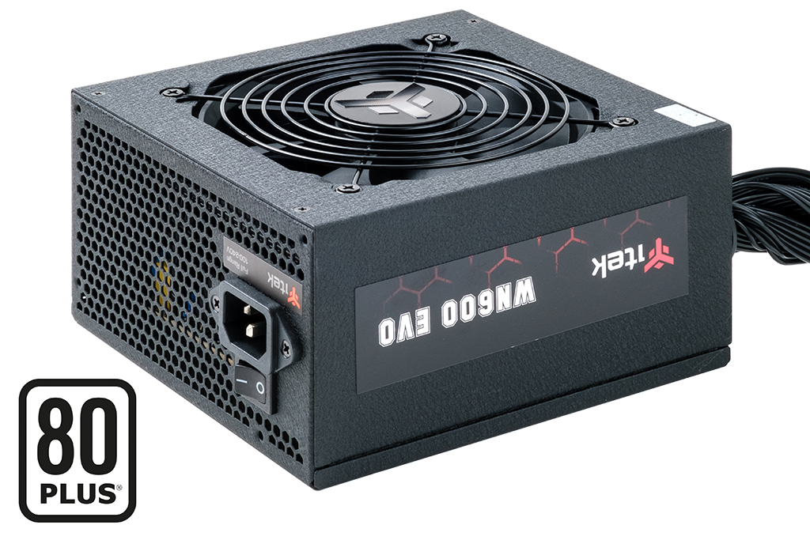

Alimentatori
Le funzioni principali
Gli alimentatori, anche chiamati PSU (Power Supply Unit), sono strumenti che convertono la corrente alternata (AC) in corrente continua (DC) per alimentare dispositivi elettronici. Gli alimentatori hanno anche delle altre funzioni, alcune di queste sono:
- Fornire corrente stabile al dispositivo che vi e collegato a esso
- Fornire sicurezza: gli alimentatori hanno un sistema di sicurezza per prevenire sovraccarichi, corto circuiti o sovratensioni
- Fornire efficienza energetica per evitare sprechi di corrente
- Gestire la temperatura: Gli alimentatori poiché lavorano con la corrente elettrica generano calore, e per questo gli alimentatori moderni hanno un sistema di gestione della temperatura
- Adattare la corrente che ricevono: I PSU sono in grado di riadattare la corrente che ricevono in ingresso in altre tensioni.
Classificazione energetica degli alimentatori
Gli alimentatori PSU sono classificati in base alla loro efficienza energetica, che viene misurata in efficienza 80 PLUS (sistema di classificazione Americano Megatrends, istituito nel 2004). Alcune di queste classificazioni sono:
- Bronze: efficienza minima del 80%
- Silver: efficienza minima del 85%
- Gold: efficienza minima del 90%
- Platinum: efficienza minima del 92%
- Titanium: efficienza minima del 94%
Perché si classificano gli alimentatori?
- Ridurre il consumo energetico
- Migliore stabilità
Un alimentatore che converte la maggior parte della corrente che riceve in entrata, produce meno calore, il ciò si traduce in minore sprechi di energia.
Un alimentatore che produce meno calore, riduce anche lo stress sui componenti e sul sistema di raffreddamento e di conseguenza l’alimentatore funziona in maniera più stabile e silenziosa.
Formati degli alimentatori
Gli alimentatori PSU sono disponibili in diversi formati, per permettere la compatibilità con i vari case, sistemii più comuni dei quali sono:
- ATX
- SFX
- TFX
il formato più diffuso, utilizzato dalla maggior parte dei computer desktop e può essere installato nella maggior parte dei case.
un formato più compatto, utilizzato nei computer con schede madri mini-ITX
È una variante leggermente più lunga del formato SFX, utile per case mid-tower molto compatti.

Modularità
La modularità in un alimentatore riguarda la possibilità di collegare cavi di alimentazione al PC. Esistono vari tipi di modularità in un alimentatore: modulari, non modulari e semi-modulari.
- Modulari
- Non modulari
- Semi-modulari
Un alimentatore modulare è dotato di connettori per i cavi di alimentazione necessari all’utente, ciò è un vantaggio perché permette un maggiore ordine tra i cavi di alimentazione
Gli alimentatori non modulari, a differenza di quelli modulari non permettono all’utente di scegliere i cavi da utilizzare o meno, infatti tutti i cavi sono fissati nell’alimentatore non permettendone la rimozione dei cavi inutilizzati.
Questo tipo di alimentatori e una via di mezzo tra i due detti in precedenza, infatti i semi-modulari hanno dei cavi, ovvero quelli principali, invece per i cavi secondari ci sono gli appositi ingressi per collegare il cavo.
Tecnologia di switching
Gli alimentatori moderni utilizzano la tecnologia switching per convertire la corrente alternata in corrente continua, questa tecnologia ha il compito di:
- Raddrizzatore: converte la corrente alternata in corrente continua
- Filtro: elimina le oscillazioni e irregolarità della corrente continua
- Oscillatore: genera una corrente alternata ad alta frequenza modulazione PWM
- Trasformatore: abbassa la tensione alternata ad alta frequenza
- Raddrizzatore e filtro: convertono nuovamente in corrente continua la tensione della corrente alternata
Come nascono gli alimentatori?
Gli alimentatori nascono con l'invenzione dei primi trasformatori e raddrizzatori, che permettevano di convertire la corrente alternata in corrente continua. Questi dispositivi erano ingombranti e poco efficienti. Negli ultimi decenni, con la diffusione di computer e apparecchiature elettroniche, gli alimentatori sono diventati ancora più importanti. Così si sono iniziati a produrre alimentatori meno ingombranti e più affidabili.
Componenti di un alimentatore
Un alimentatore per convertire la corrente alternata in continua ha bisogno di alcuni componenti per funzionare come ad esempio, un trasformatore che ha il compito di convertire la corrente in ingresso (220V), in un voltaggio minore come 12 o 5V, o come i condensatori, che conservano per un breve periodo la corrente e servono a fornire stabilità alla corrente continua.
Alimentatori lineari
Gli alimentatori lineari sono stati i primi dispositivi in grado di convertire la corrente alternata in corrente continua. Hanno la funzione di convertire la corrente alternata in continua, ma a differenza degli alimentatori switching fornisce una maggiore stabilità ed è molto più semplice da utilizzare, anche se molto ingombrante.
Alimentatori non ridondanti
Gli alimentatori non ridondanti sono un tipo di alimentatore, principalmente usato per i server, per evitare che in caso di guasto dell’alimentatore principale o assenza di corrente, il server non si spenga. Ciò fornisce sicurezza sulla stabilità dei server.

Gestione dei cablaggi degli alimentatori nei PC
Quando si installa un alimentatore in un PC, è bene organizzare tutti i cavi che escono dall'alimentatore e li collegano alle varie parti del computer. Perciò buona norma utilizzare solo i cavi necessari al pc, in caso di alimentatore modulare, e sistemando all’interno del case i cavi in modo che non creino un corto o intralcino altri componenti. Questi consigli sono adatti per un pc con alimentatore modulare, in caso di alimentatore non modulare bisognerà sistemare tutti i cavi all’interno del case in maniera ottimale.
L’impatto degli alimentatori sull’ambiente
Quando scegliamo alimentatori che consumano meno energia, aiutiamo a ridurre lo spreco e le emissioni nocive. Meno energia consumano gli alimentatori, meno inquinamento causano le centrali elettriche che la producono. Anche la produzione degli alimentatori stessi può causare inquinamento.
L’innovazione degli alimentatori
Gli alimentatori hanno subito un'evoluzione significativa, passando da dispositivi grandi e inefficienti a soluzioni più piccole, efficienti e intelligenti. Come ad esempio la ricarica wireless, che sfrutta l'induzione elettromagnetica per trasmettere energia a dispositivi come smartphone e tablet, senza l'uso di cavi. Questo è solo un esempio di come il mondo dell’elettronica sta avanzando velocemente per fornire maggiore comodità e stabilità allo stesso tempo.